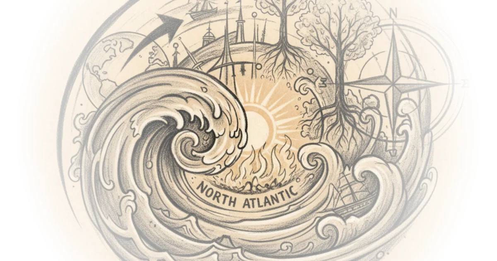

Venezuela: The Precedents Timothy Snyder · Timothy Snyder ·Jan 4, 2026 · 10 min read · Political Strategy
(Largely) Hoisted From THE Archives: “West”, “North Atlantic”, or “Dover Circle”? Brad DeLong · DeLong's Grasping Reality ·Jan 2, 2026 · 15 min read · Economics 
Reading: John Maynard Keynes on Isaac Newton Brad DeLong · DeLong's Grasping Reality ·Jan 2, 2026 · 24 min read · Economics
Crosspost: Bret Devereaux: Once You Imagine Aleksander the Great’s Victims as People… Brad DeLong · DeLong's Grasping Reality ·Jan 2, 2026 · 14 min read · Economics
No, Aleksander the Great Was Not "Great" in Any Sense with a Strong Connotation of "Admirable" Brad DeLong · DeLong's Grasping Reality ·Jan 1, 2026 · 15 min read · Economics
Lessons for Debt Control from Clinton's Success in the 1990s Brad DeLong · DeLong's Grasping Reality ·Jan 1, 2026 · 12 min read · Economics
December 30, 2025 Heather Cox Richardson · Letters from an American ·Dec 31, 2025 · 11 min read · Political Strategy
The Amchitka Nuclear Tests - How Modern Environmentalism Was Born Kings and Generals · Kings and Generals ·Dec 28, 2025 · 17 min read · Science
Hoisted From THE Archives: John Holbo on the Horrible Atrocity of Defending Good Causes Badly! Brad DeLong · DeLong's Grasping Reality ·Dec 27, 2025 · 13 min read · Economics
December 26, 2025 Heather Cox Richardson · Letters from an American ·Dec 27, 2025 · 10 min read · Political Strategy
The 51 biggest American political moments of the 21st century Nate Silver · ·Dec 26, 2025 · 22 min read
Crosspost: Steve Schmidt: Bari Weiss killed CBS News in 76 days Brad DeLong · DeLong's Grasping Reality ·Dec 26, 2025 · 12 min read · Economics
The "1984" Theory of Bari Weiss Brad DeLong · DeLong's Grasping Reality ·Dec 24, 2025 · 10 min read · Economics
Candace Owens Says “Jews Were In Control of the Slave Trade.” Is She Right? Kahlil Greene · History Can't Hide ·Dec 23, 2025 · 11 min read
Chartbook 421: The end of American soft-power? From Coca-colonization to Fanta-ization Adam Tooze · Chartbook ·Dec 23, 2025 · 10 min read · Economics
Why Is Christmas on December 25th? Andrew Henry · Religion For Breakfast ·Dec 22, 2025 · 49 min read · Faith
the ancient 300 year megadrought was probably not great Stefan Milo · Stefan Milo ·Dec 22, 2025 · 18 min read
Thieves in Law: The World of Soviet Crime Kings and Generals · Kings and Generals ·Dec 21, 2025 · 19 min read · Law & Rights
Why the EV Revolution Just Stalled Patrick Boyle · Patrick Boyle ·Dec 20, 2025 · 22 min read · Economics
Sarah Paine – Why Russia Lost the Cold War Dwarkesh Patel · Dwarkesh Patel ·Dec 19, 2025 · 100 min read · Foreign Policy
Confucius Has Living Descendants? Andrew Henry · Religion For Breakfast ·Dec 19, 2025 · 17 min read · Faith
Young White Supremacists Build a “Whites-Only” Town, But They Can’t Agree on Who Gets In Kahlil Greene · History Can't Hide ·Dec 18, 2025 · 10 min read · Public Health
Let Us Attack "Continental Philosophy" & Philosophers!: Thursdays in Academia Brad DeLong · DeLong's Grasping Reality ·Dec 18, 2025 · 16 min read · Economics
The Woman Who Mapped Labrador and Revolutionized the Literature of Exploration Maria Popova · The Marginalian ·Dec 18, 2025 · 16 min read · Culture
Jane Austen Was Born on December 16, 1775 Brad DeLong · DeLong's Grasping Reality ·Dec 16, 2025 · 11 min read · Economics
America at 250 Podcast Episode 11: The Politics of the 1980s, 1990s, and So Much More Yale University · Yale Courses ·Dec 15, 2025 · 56 min read · Political Strategy